Dinogarten — a kind daily report toolДиносадик
A mobile app for a kindergarten where every child is a little dinosaur — daily mood, homework, and parent chats in one calm place.Цифровой дневник для воспитателей детского сада: управление группами, оценка успеваемости и поведения детей, а также коммуникация с родителями


What is Dinogarten?Что такое Диносадик?
An educator keeps a daily record for every child — mood, behaviour, homework — and answers parents alongside it. All of it happens during the day, without stepping away from the roomВоспитатель ведёт по каждому ребёнку дневник — настроение, поведение, домашние задания — и параллельно отвечает родителям. Всё это происходит в течение дня, не отходя от группы
Dinogarten is an app for a kindergarten where every child is a little dinosaur: the daily diary, the groups and the parent chat in one placeДиносадик — приложение для детского сада, где каждый воспитанник представлен в образе маленького динозаврика: дневник, группы и переписка с родителями в одном месте
- AudienceАудитория продукта
- Kindergarten educators, predominantly women aged 25–54Воспитатели детских садов, преимущественно женщины 25–54 лет
- User missionЗадача пользователя
- Capture what happened with each child today, without losing five minutes of attention from the roomЗафиксировать, что сегодня произошло с каждым ребёнком, не теряя ни пяти минут внимания к группе
- Business goalБизнес-цель
- Reduce daily admin time, increase parent engagement, and give administrators a real-time view of group well-beingСделать ведение дневника группы удобнее для воспитателей, упростить коммуникацию с родителями и собрать ежедневные задачи в одном приложении
What I didЧто я сделала
- Discovery: deep-dive audit of four reference products and synthesis of best-practice insights.Дискавери: проанализировала четыре референсных продукта и выделила лучшие UX-практики.
- Hypothesis formulation: JTBD-framed propositions per scenario, each with a success threshold.JTBD: сформулировала гипотезы и критерии успешности для каждого ключевого сценария.
- User-flow design: six core educator scenarios mapped end-to-end (start state, screens, decisions, exits, recovery paths).Проектирование: разработала пользовательские потоки для шести основных сценариев работы воспитателя.
- UI design: visual language (color-coded groups, custom dinosaur mascots, mood indicators), home, search and group-detail screens.UI-дизайн: создала визуальную концепцию приложения, включая систему цветового кодирования, авторских динозавров и интерфейсы основных экранов.
- Component foundations: dinosaur silhouette set, mood-emoji avatars, color tokens.Дизайн-система: разработала базовые компоненты, цветовые токены и библиотеку иллюстративных персонажей.
- Presentation: packaged the concept for review.Презентация: подготовила концепт к защите и продуктовому ревью.
Desk researchКабинетное исследование
Before benchmarking I gathered published research on two questions: how much of an educator's working day goes to things other than working with children, and what tools educators reach for today.Перед бенчмаркингом я собрала опубликованные исследования по двум вопросам: сколько рабочего времени воспитателя уходит не на работу с детьми и какими инструментами воспитатели пользуются сегодня.
What the routine costsСколько времени забирает рутина
A time-use diary study of 321 educators across 304 centres — 10,155 records — and a survey of 570 educators. What came out of them:Хронометраж 321 воспитателя в 304 садах — 10 155 записей в дневниках времени — и опрос 570 педагогов. Что выяснилось:
The rest of the day splits like this: planning and assessment 8.8%, administration 6.5%, family communication just 3.7%. Unpaid overtime averages nine hours a week.Остальное расходится так: планирование и оценка — 8,8%, администрирование — 6,5%, общение с семьями — всего 3,7%. В среднем переработка составляет 9 часов в неделю.
Sources: Источники: Harrison et al., Australasian Journal of Early Childhood, 2024 · The Australian Educational Researcher, 2025
How educators solve this todayКак воспитатели решают это сейчас
A survey of 273 educators on the channels they use to reach parents. What came out of it:Опрос 273 педагогов о том, какими каналами связи с родителями они пользуются. Что выяснилось:
53.2%53,2%
The most common channel to parents. Available to everyone, but it doesn't structure what is known about a child: the messages that matter stay in the thread and never gather in one placeСамый частый канал связи с родителями. Доступен всем, но не структурирует информацию о ребёнке: важные сообщения остаются в переписке и не собираются в одном месте
51.6%51,6%
Covers the reporting requirement, but gets filled in after the shift. It's a form, not a tool you use while the room is runningЗакрывает требования по отчётности, но заполняется после смены. Это форма, а не инструмент, которым пользуются посреди дня
42.1%42,1%
Fast and familiar, so part of the conversation leaks here — but what is known about a given child stays scattered across chatsБыстро и привычно, поэтому часть общения утекает сюда — но информация о конкретном ребёнке остаётся разбросанной по чатам
InsightВывод
Dedicated school-to-parent apps are the least used channel of all: 88.7% of educators barely touch them, and 62.3% name them the least suitable tool. The problem isn't that such products don't exist — it's that nobody reaches for them. So the concept rests on an app that feels lighter than a messenger, not heavier than a platform.Специализированные приложения для связи сада с родителями — самый редкий канал: 88,7% педагогов почти к ним не обращаются, а 62,3% называют их наименее подходящим инструментом. Проблема не в том, что таких продуктов нет, — а в том, что к ним не тянутся. Поэтому в основе концепции — приложение, которое ощущается легче мессенджера, а не тяжелее платформы.
Source: Источник: International Journal of Early Childhood, Springer, 2025
BenchmarkingБенчмаркинг
Rather than inventing from zero, I audited four established products that address adjacent problems, looking for patterns that would make an educator's day quietly easier. What came out of it:Вместо того чтобы придумывать с нуля, я проанализировала четыре продукта со схожими задачами — искала паттерны, которые незаметно облегчают день воспитателя. Что выяснилось:
SmartSchoolPro
Information is split across tabs — each one a separate cognitive bucket. Makes a dense data screen feel lightСмысловое разделение информации по вкладкам снижает когнитивную нагрузку
Information about children and groups lives in one place and reports are built from it, so the educator never enters the same thing twiceИнформация о детях и группах хранится в одном месте, а отчётность формируется на её основе: воспитателю не нужно вносить одну и ту же информацию дважды
ClassDojo
Parent announcements live in a chat thread. A pattern parents already understand from messaging appsОбъявления встроены в чат с родителями, поэтому пользователям не нужно осваивать новый способ взаимодействия — сценарий знаком по привычным мессенджерам
Picture grades instead of letters — kindergarten doesn't need a 1–5 score; smiles do better workВместо числовых оценок используются визуальные обозначения, что делает информацию более понятной и дружелюбной для дошкольного контекста
Procare
Birthday reminders surface before they're missed. Calendar uses color-coding consistently across the productВажные события отображаются заранее, чтобы их нельзя было пропустить. Единая система цветового кодирования помогает быстрее ориентироваться в календаре
Lillio
Allergies are foregrounded in the child profile — not buried under notes. Critical safety info, treated as criticalКритически важная информация (например, аллергии) вынесена на первый план профиля ребёнка и не теряется среди остальных данных
What we believe before we buildЧто я предположила
Each insight from discovery becomes a testable proposition. Threshold for a hypothesis to "hold": 75% of educators in a usability round confirm the behavior or preference. Threshold was chosen to flag patterns strong enough to ship without leaving room for confirmation bias on small samples.Каждый инсайт из исследования был преобразован в JTBD-гипотезу с заранее определённым критерием успешности. В качестве порога подтверждения я выбрала 75% положительных ответов участников юзабилити-тестирования — этого достаточно, чтобы считать паттерн устойчивым и снизить влияние единичных мнений на итоговые решения.
H1 · A group's colour shortens the path to a child's cardH1 · Цвет группы сокращает путь до карточки ребёнка
Educators find the right child faster when groups on the home screen differ by colour and not only by nameВоспитатели быстрее находят нужного ребёнка, когда группы на главном экране различаются цветом, а не только названием
Job story: When I need to note something about a child, I want to open their card quickly, so I can put it in right away instead of leaving it for laterJob story: Когда мне нужно записать что-то про ребёнка, я хочу быстро открыть его карточку, чтобы внести всё сразу и не откладывать
H2 · Smiley mood avatars are clearer than a 1–5 gradeH2 · Смайлики понятнее оценок
Educators record a child's mood faster and more confidently with three states — happy, neutral, sad — than with a numeric scaleВоспитатели быстрее и увереннее фиксируют настроение ребёнка тремя вариантами состояния — радость, нейтрально, грусть, — чем по числовой шкале
Job story: When a child's day is over and I record how it went, I want to pick a state with one tap, so I do not have to translate a mood into a number or second-guess the scoreJob story: Когда день у ребёнка закончился и я отмечаю, как он прошёл, я хочу выбрать состояние одним касанием, чтобы не переводить настроение в баллы и не сомневаться в оценке
H3 · A route from the chat to the card beats searchingH3 · Переход из чата в карточку быстрее поиска
Educators lose the thread less often when the chat with a parent leads straight into the card of the child it is about, than when they have to find that child in the general list after reading the messageВоспитатели реже теряют нить, если из чата с родителем можно сразу попасть в карточку ребёнка, о котором идёт речь, чем когда после сообщения его приходится искать в общем списке
Job story: When a parent messages me that their child is sick and won't come in, I want to read the message, reply, and get to that child's card right away, so I don't forget and can keep working with the other childrenJob story: Когда родитель пишет мне, что его ребёнок заболел и не придёт, я хочу прочитать сообщение, ответить и сразу перейти в его карточку, чтобы не забыть и продолжить работать с остальными детьми
H4 · One group-wide announcement beats N parent DMsH4 · Одно объявление удобнее личных сообщений
Educators tell the whole group something important faster through a single announcement composer than through a list of separate chatsВоспитатели быстрее сообщают всей группе важную информацию через единый редактор объявлений, чем через список отдельных чатов
Job story: When I need to tell every parent in the group the same thing, I want to write it once, so I do not repeat the message in every chatJob story: Когда мне нужно сообщить одно и то же всем родителям группы, я хочу написать это один раз, чтобы не повторять сообщение в каждом чате
H5 · Homework belongs on the group pageH5 · Домашнее задание — на странице группы
Educators send a task more often when they compose it right on the group page and address it to the whole group at once, than when it means going to a separate section and choosing recipientsВоспитатели чаще отправляют задание, если создают его прямо на странице группы и сразу адресуют всей группе, чем когда для этого нужно переходить в отдельный раздел и выбирать получателей
Job story: When I set homework, I want to assign it to the whole group in one go, so I don't create it separately for each childJob story: Когда я задаю домашнее задание, я хочу назначить его всей группе за один раз, чтобы не создавать его отдельно для каждого ребёнка
H6 · Today's sessions come firstH6 · Сегодняшние занятия — в приоритете
Educators who run several groups find what they need faster when groups with a session today are shown at the top of the home screen and the day's events live in the calendar tab, rather than when every group is one flat listВоспитатели, которые ведут несколько групп, быстрее находят нужную информацию, если группы с занятиями сегодня показаны вверху главного экрана, а события дня — в разделе с календарём, а не когда все группы идут одним списком
Job story: When I run several groups, I want to see what I have today straight away, so I don't open each group and hunt for its scheduleJob story: Когда я веду сразу несколько групп, я хочу сразу видеть, что у меня сегодня, чтобы не открывать каждую группу и не искать её расписание
Six scenarios, one warm systemШесть сценариев
Solutions grounded in the hypotheses and job storiesРешения, основанные на гипотезах и job stories
The child's card: fast to find, important things firstКарточка ребёнка: быстро найти и сразу увидеть главное
"When I need to note something about a child, I want to open their card quickly, so I can put it in right away instead of leaving it for later"«Когда мне нужно записать что-то про ребёнка, я хочу быстро открыть его карточку, чтобы внести всё сразу и не откладывать»
The home screen is the educator's anchor. Open the app, pick the right group, scan every child in one scroll, tap to open their card — three taps to the right dinosaur, no search detour, no nested menus. The child's card gathers everything that matters: allergies, birthday and the educator's notes. A new note can be added right there.Главный экран спроектирован для быстрого доступа к основным сценариям. Воспитатель выбирает группу, видит список всех детей и открывает карточку нужного ребёнка за три касания, без использования поиска и вложенной навигации. В карточке ребёнка собрана вся важная информация: аллергии, день рождения и заметки воспитателя. Здесь же можно быстро добавить новую заметку.
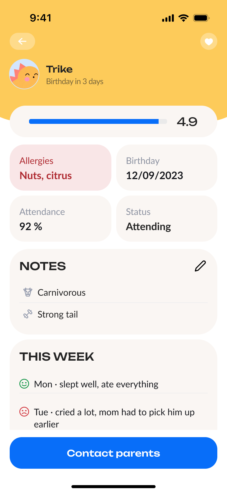
Recording how the day wentФиксация того, как прошёл день
H2 · Smiley mood avatars are clearer than a 1–5 gradeH2 · Смайлики понятнее оценок
"When a child's day is over and I record how it went, I want to pick a state with one tap, so I do not have to translate a mood into a number or second-guess the score"«Когда день у ребёнка закончился и я отмечаю, как он прошёл, я хочу выбрать состояние одним касанием, чтобы не переводить настроение в баллы и не сомневаться в оценке»
On the group page, the day's outcome is built into the child list: three options per child, each one tap away. It can be marked on the group page and in the child's card.На странице группы итог дня встроен прямо в список детей: для каждого ребёнка доступны три варианта, которые можно выбрать одним касанием. Отметить можно на странице группы и в карточке ребёнка.
Schedule and the day's outcome share one screen, so the educator can record how the day went in the context of the activity itself. No separate section to open, no grades to type: the data is collected automatically and forms the group's rating.Расписание и итог дня объединены на одном экране, поэтому воспитатель может зафиксировать, как прошёл день, прямо в контексте занятия. Не нужно переходить в отдельный раздел или вводить оценки вручную: данные автоматически собираются и формируют рейтинг группы.
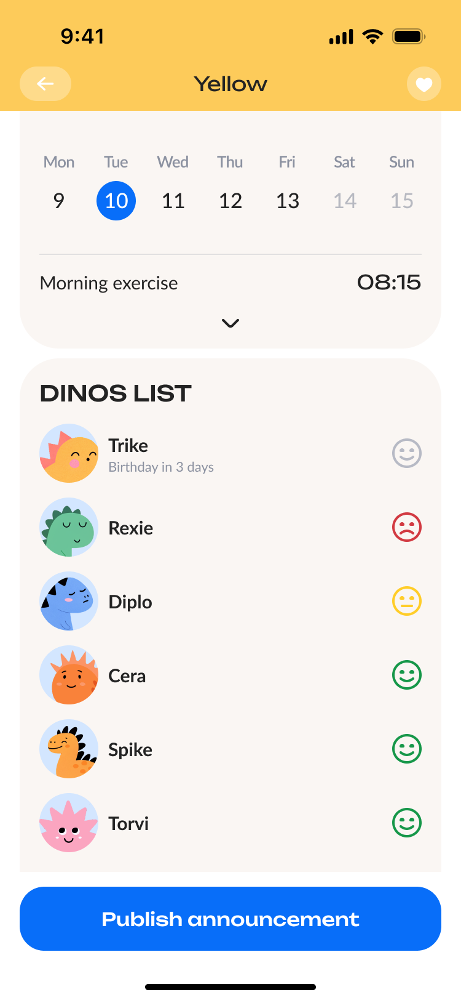
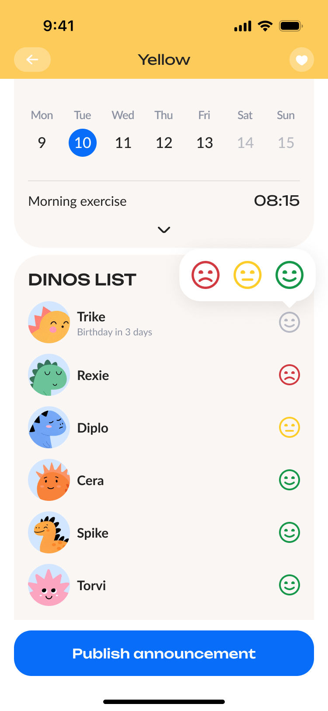
Reading a message from a parentЧтение сообщения от родителя
H3 · A route from the chat to the card beats searchingH3 · Переход из чата в карточку быстрее поиска
"When a parent messages me that their child is sick and won't come in, I want to read the message, reply, and get to that child's card right away, so I don't forget and can keep working with the other children"«Когда родитель пишет мне, что его ребёнок заболел и не придёт, я хочу прочитать сообщение, ответить и сразу перейти в его карточку, чтобы не забыть и продолжить работать с остальными детьми»
Messages live in their own tab so they do not crowd the main interface. Even so, a conversation leads straight to what is needed: the avatar in the chat header opens the parent's card, where their children are listed, and from there the right child's card.Чаты находятся в отдельной вкладке, чтобы не перегружать основной интерфейс. При этом из переписки можно сразу перейти к нужной информации: аватар в шапке диалога открывает карточку родителя, где перечислены его дети, а оттуда — карточку нужного ребёнка.
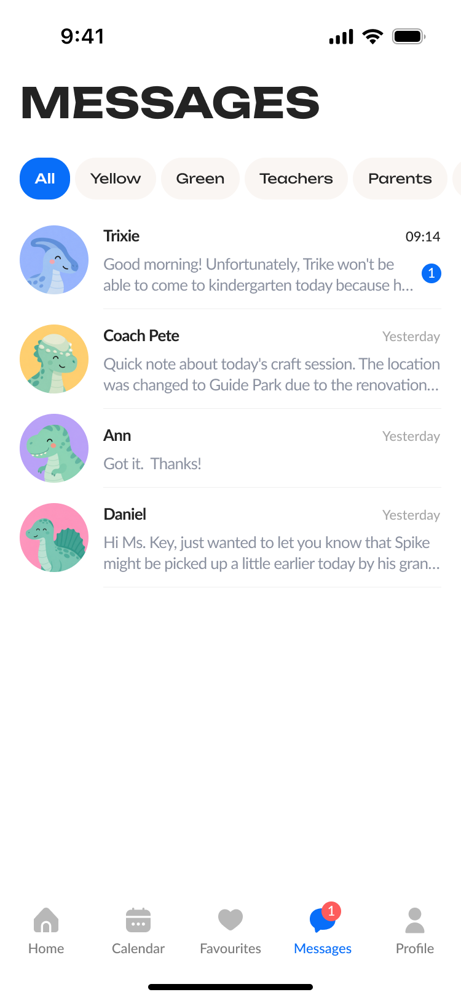
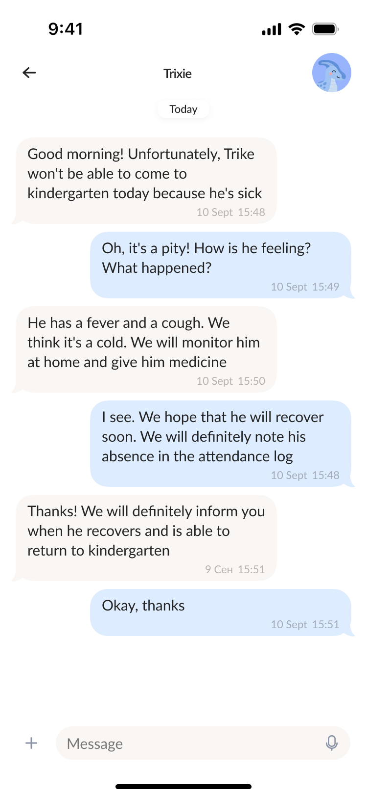
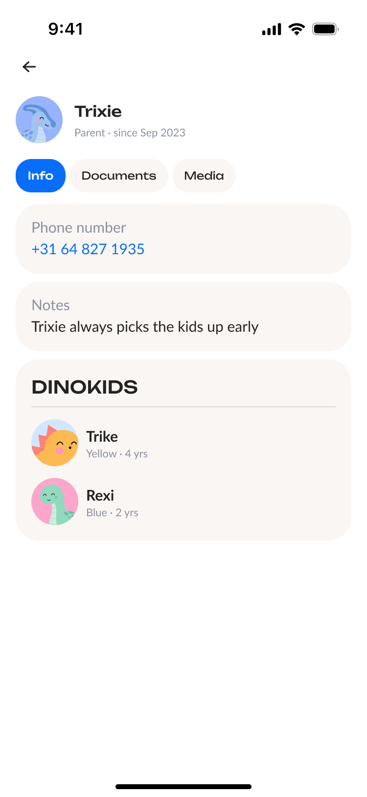
Announcement to every parent in the groupОбъявление всем родителям группы
H4 · One group-wide announcement beats N parent DMsH4 · Одно объявление удобнее личных сообщений
"When I need to tell every parent in the group the same thing, I want to write it once, so I do not repeat the message in every chat"«Когда мне нужно сообщить одно и то же всем родителям группы, я хочу написать это один раз, чтобы не повторять сообщение в каждом чате»
From the group detail screen, the primary blue CTA ("Make announcement") opens a single composer that broadcasts to every parent in that group. Parents know the format from school group chats, so there is no new way of talking to pick up.Создание объявлений начинается прямо со страницы группы. Вместо отправки отдельных сообщений воспитатель открывает единый редактор и одним действием рассылает информацию всем родителям выбранной группы. Формат знаком родителям по школьным групповым чатам, поэтому им не нужно осваивать новый способ общения.
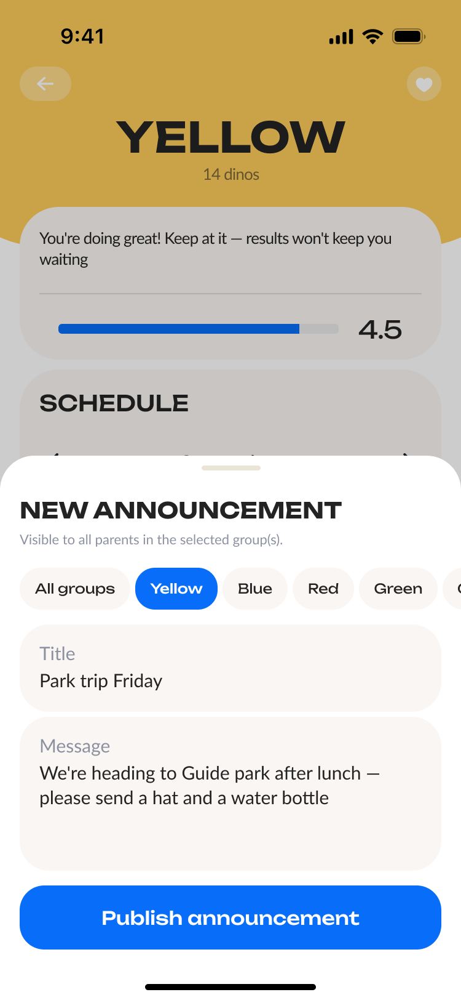
Setting today's homeworkНазначение домашнего задания на сегодня
H5 · Homework belongs on the group pageH5 · Домашнее задание — на странице группы
"When I set homework, I want to assign it to the whole group in one go, so I don't create it separately for each child"«Когда я задаю домашнее задание, я хочу назначить его всей группе за один раз, чтобы не создавать его отдельно для каждого ребёнка»
Homework is a section on the group page, so the educator never leaves for a separate area. Type a title and the task, attach a photo, a file or a voice message if needed, set a due date — and send it to the whole group.Домашние задания доступны прямо на странице группы, поэтому воспитателю не нужно переходить в отдельный раздел. Достаточно ввести заголовок и текст, при необходимости приложить фото, файл или голосовое сообщение, указать срок — и отправить задание всей группе.
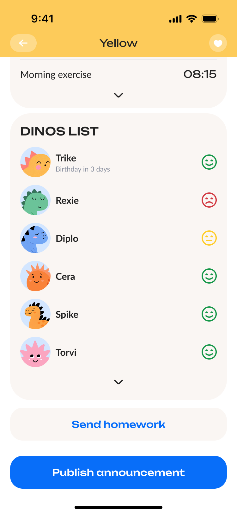
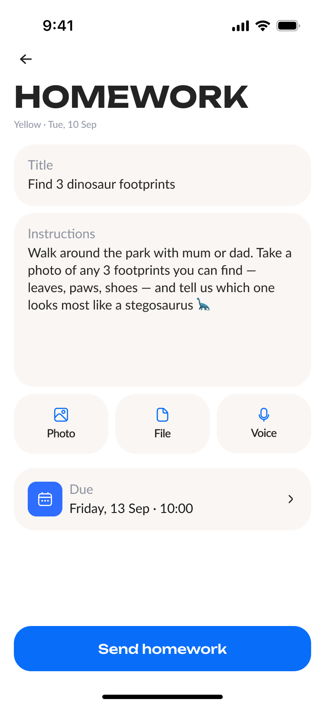
Working across multiple groupsРабота сразу с несколькими группами
H6 · Today's sessions come firstH6 · Сегодняшние занятия — в приоритете
"When I run several groups, I want to see what I have today straight away, so I don't open each group and hunt for its schedule"«Когда я веду сразу несколько групп, я хочу сразу видеть, что у меня сегодня, чтобы не открывать каждую группу и не искать её расписание»
Groups with a session today sit at the top of the home screen in a separate Today block — with the time, and no searching. The calendar shows the month's schedule: every group has its own colour, and the selected day's events appear as a separate list. That way every group's schedule can be read in one place.Группы, у которых сегодня есть занятия, вынесены наверх главного экрана в отдельный блок «Сегодня» — со временем занятия, без поиска. Календарь показывает расписание на месяц: у каждой группы свой цвет, а события выбранного дня отображаются отдельным списком. Так расписание всех групп можно посмотреть в одном месте.
Frequently used groups are added to Favourites with the heart on the card, and the home screen can be switched between all groups and My.Частые группы воспитатель добавляет в избранное сердечком на карточке, а главный экран можно переключить между всеми группами и только моими.
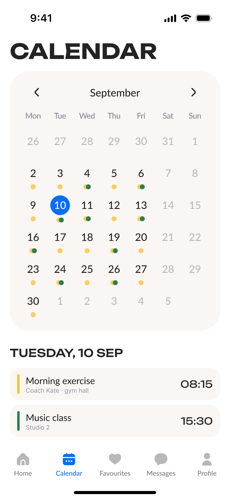
A daily report that doesn't feel like paperworkОтчёт без рутины
The visual language is the case. Every product decision was tested against one question: "Would an educator still feel calm using this on their worst Tuesday?"Каждое решение я проверяла одним вопросом: останется ли интерфейс понятным даже в самый загруженный день воспитателя?
Design philosophyФилософия дизайна
- Warm before utilitarian — cream card background, soft pastels, friendly serif-adjacent display font for headers. The screen never argues with the room it's used in.Тёплая визуальная среда — кремовый фон карточек, мягкие пастельные оттенки и дружелюбная типографика создают спокойный интерфейс, который не отвлекает от работы.
- Color is information — every group owns a hue, and that hue carries into every screen it appears on (cards, calendar, schedule strips). The educator builds a map by repetition, not by reading.Цвет как навигация — каждая группа получает свой цвет, который сохраняется во всех связанных экранах. Это помогает быстрее ориентироваться без постоянного чтения названий.
- Pictures replace grades — children get cartoon avatars; their daily state is a three-state mood emoji, not a number. Aggregate numbers only appear at the group level, for administrators.Визуальные оценки вместо чисел — состояние ребёнка передаётся с помощью трёх эмодзи, а числовые показатели остаются только на уровне сводной аналитики.
- Critical info climbs the page — allergies, today's mood, and active homework are pinned above scroll. Birthday reminders push themselves toward the educator three days early.Важное всегда сверху — критически важная информация закреплена в верхней части экрана, а напоминания появляются автоматически заранее.
- One-handed by default — every primary action sits in the bottom third of the screen, within thumb reach.Управление одной рукой — основные действия расположены в зоне естественной досягаемости большого пальца.
Key screensКлючевые экраны
What landedЧто получилось
Usability testing (n = 6)Юзабилити-тестирование (n = 6)
I tested six hypotheses together with kindergarten educators and schoolteachers. The threshold was set in advance — 75% of positive answers, which on a sample this size means five voices out of six.Я проверила шесть гипотез вместе с воспитателями детских садов и учителями. Порог подтверждения был задан заранее — 75 % положительных ответов; на такой выборке это пять голосов из шести.
- Most of the hypotheses held.Большинство гипотез подтвердились.
- The steadiest were colour-coded groups, reaching a child through their group, and the link between a message and a card.Устойчивее всего — цветовое кодирование групп, переход к ребёнку через группу и связь сообщения с карточкой.
- Replacing numeric grades with smileys held only in part: participants understood the general sense of the three states, but reading them called for explanation.Замена числовых оценок смайликами подтвердилась частично: общий смысл трёх состояний участники понимали, но для их интерпретации требовались пояснения.
Every surface — Home, Group detail, Kid card, parent chat, calendar, announcement and homework composers — is built in one visual language and finished to the point where the concept can be shown and discussed.Все экраны — Главная, Детали группы, Карточка ребёнка, чат с родителем, календарь, редакторы объявлений и домашних заданий — собраны в едином визуальном языке и доведены до состояния, в котором концепцию можно показывать и обсуждать.
What I'd do with another week or twoЧто дальше
- Take the screens to handoff — error and empty states, behaviour on long content, and a spec for the child card, parent chat, announcement and homework composers, and the calendar tab.Довести экраны до передачи в разработку — состояния ошибок и пустые экраны, поведение на длинных данных и спецификация для карточки ребёнка, чата с родителем, редакторов объявлений и домашних заданий и календаря.
- Parent-side companion — a read-only companion app for parents to see today's mood, homework, and chat, in the same visual system so it feels like one product. That is also where to check whether a parent reads the three mood states without any explanation.Приложение для родителей — спроектировать отдельное приложение для родителей с доступом к дневнику ребёнка, домашним заданиям и сообщениям, сохранив единый визуальный язык. Там же проверить, читает ли родитель три состояния настроения без пояснений.
- Administrator role — a kindergarten-director surface for cross-group well-being trends and birthday calendars across all groups.Роль администратора — разработать отдельный интерфейс для заведующей со сводной аналитикой по группам, рейтингами и календарём важных событий.
- Lightweight Telegram-bot fallback — for educators in kindergartens with patchy device access, surface the same daily mood capture as a bot conversation.Telegram-бот — проверить сценарий ежедневной работы воспитателя через Telegram-бота для детских садов с ограниченным доступом к устройствам.
- Accessibility audit — verify the color-coding works for color-blind users (add a small icon or pattern overlay per group so color isn't the only signal).Доступность — провести аудит доступности и дополнить цветовое кодирование дополнительными визуальными маркерами, чтобы цвет не был единственным способом различать группы.
Working materialsРабочие материалы
Full 6-scenario user flow (original board)Полный пользовательский поток на 6 сценариев (исходная доска)
The board below is the original Russian working artifact for the six end-to-end flows: quick child lookup, day grading, reading a parent message, group announcement, homework, and favorites & calendar. The nodes are color-coded by type so the path can be read as start state, screen, decision, side scenario, and error path.Ниже — рабочая доска с user flow, которая легла в основу проектирования ключевых сценариев приложения. Она охватывает поиск ребёнка, итог дня, работу с сообщениями, объявлениями, домашними заданиями, избранным и календарём.
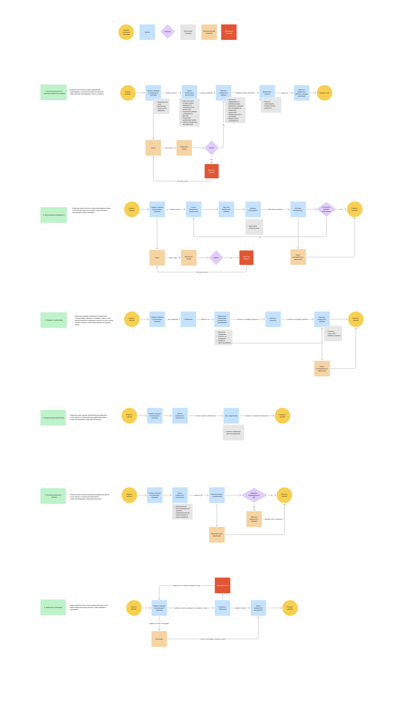